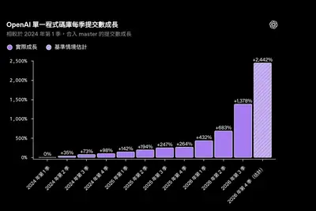
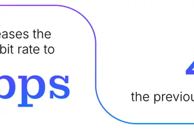
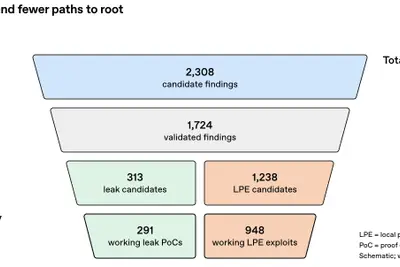
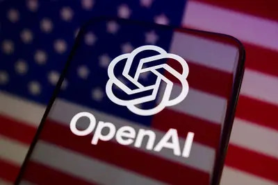
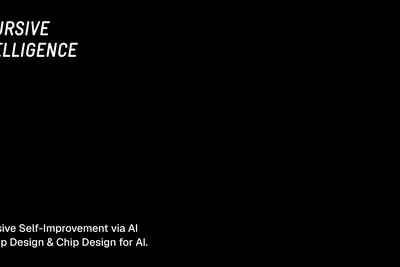
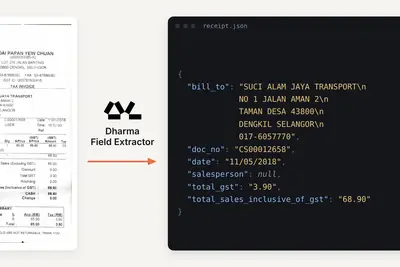

AI 每日新聞彙整
全部主題
其他
4 家媒體報導datacenterdatacenters
The Blue Wave Has Tech Bros Scrambling for Data Centers in Space
After Democrats won big in Texas and other AI infrastructure hot spots on Tuesday, data center enthusiasts looked for comfort in low Earth orbit.
- Wired AI The Blue Wave Has Tech Bros Scrambling for Data Centers in Space
- The Verge AI Qualcomm is betting big on data centers as smartphone sales sink
- Ars Technica AI Big Tech claims voters’ AI backlash is “anti-Trump” not “anti-tech”
- MIT Technology Review AI Texas was the new epicenter of the AI data center buildout. That might be kaput.
- Wired AI The Results Are In: Voters Hate Data Centers
- The Verge AI Data centers lost the midterms
3 家媒體報導schoolsgooglesearch
DuckDuckGo pitches itself to schools amid backlash over Google’s AI policy
DuckDuckGo is courting schools frustrated by Google's AI restrictions, pointing educators to its search engine and options to disable AI features.
- Wired AI Google Is Forcing AI Overviews in Classrooms. Schools Are Searching for a Way Out
- TechCrunch AI DuckDuckGo pitches itself to schools amid backlash over Google’s AI policy
- TechCrunch AI Google faces backlash for plan that would turn off Search for schools that restrict AI
- The Verge AI Google hasn’t figured out how to make AI pay like its search engine
2 家媒體報導chatgptgifsgif
OpenAI 升级 ChatGPT 图片能力，支持直接生成和编辑 GIF 动画
IT之家 11 月 5 日消息，据 The Verge 今日报道，ChatGPT 现在可以通过提示词或上传到人工智能聊天机器人的照片来创建 GIF。此次更新与 OpenAI 的新 Images 2.6 模型同步推出，允许用户调整 GIF 的动画速度，编辑单个帧，并与他人分享。 在此之前，ChatGPT 无法单步原生生成 GIF。公司分享的一个示例展示了 ChatGPT 如何根据“你能制作一只猫跳舞的 GIF 吗？”的提示生成 GIF，同时还提供切换播放速度和逐帧观看的选项。 OpenAI 表示，除了支持 GIF 制作外，Images 2.6 更新还使 C
2 家媒體報導nothingdevicemonth
Nothing CEO says company’s mysterious AI-first device is dropping next month
While it's not yet clear what kind of product the smartphone startup is cooking up, Nothing's CEO said the product is designed to leverage AI for productivity gains.
2 家媒體報導uberagentsduring
Almost no one uses AI agents to book their Uber, company says
During its busiest week last quarter, Uber said only four people booked a ride using an AI agent.
2 家媒體報導opensourceopensource
Building on open source AI? Hugging Face’s policy chief on the costs, risks, and trade-offs
Open source models are becoming more mainstream as enterprises, governments and startups alike rely on the promise of lower costs, more control, and more flexibility. But as increasingly capable models become more freely available, how do companies capture value? And with Chinese
2 家媒體報導siriappletried
Apple 加速 Siri AI Agent 化：開放第三方 App 自訂操作，還能串接多步驟任務
AI Agent 正逐漸從回答問題，走向替使用者執行任務，手機上的智慧助理也開始扮演不同角色。當 Google 已讓 Gemini 嘗試代替使用者叫車、點餐，Apple 也正擴大 Siri 操作第三方 App 的能力。 根據 Apple 最新開發者公告，Apple 宣布向所有開發者開放新一代 Siri AI 整合，並引入 Skills 機制，讓 Siri 不只能呼叫 App 功能，還能將多個操作串接成完整任務。這項更新，也讓 Siri 朝手機 AI Agent 的任務執行入口更進一步。 從查訂單到預訂服務，Siri 擴大第三方 App 操作能力 Appl
2 家媒體報導flashproveanthropic
Anthropic 公開 FlashProve 研究原型，以密碼學證明 AI 回應出自哪個模型
Anthropic 的 Frontier Red Team 公開由 Claude 改進的零知識證明系統 FlashProve，讓使用者在看不到權重的情況下，也能確認回應出自服務商承諾的模型；以每張 GPU 換算，證明所需的 GPU 時間約為一般推論的 70 至 95 倍。本文依官方研究文章與 GitHub 文件，拆解它的運作方式、和既有系統的差距，以及離實際部署還差哪些限制。
2 家媒體報導llmjackinggooglemandiant
企業 AI 帳單驚爆百萬美元，新型駭客攻擊「LLMjacking」手法大解密
生成式 AI 發展迅速，卻也成為網路犯罪份子的新目標。Google 威脅情報團隊與 Mandiant 近期發布 […]
- 科技新報 TechNews 企業 AI 帳單驚爆百萬美元，新型駭客攻擊「LLMjacking」手法大解密
- iThome 雲端憑證遭竊成LLMJacking攻擊入口，企業AI模型資源被盜用牟利
2 家媒體報導gitpandoopenai
OpenAI自建Pando擴充Git後端，推送延遲降低近80%
OpenAI公開自建的Git後端Pando，以因應Codex帶動的大量並行開發工作。Pando在保留Git協定與既有操作方式的前提下，讓不同分支能獨立更新，並重複使用Git資料封裝檔加快資料傳輸。OpenAI表示，切換後程式碼推送延遲中位數降低近80%，每天傳送近1 PB的Git資料。

arenakimik3.1
月之暗面 2.8 万亿参数 Kimi K3.1 Pro 开放权重，登顶 Agent Arena 开源模型榜
IT之家 11 月 5 日消息，按照 10 月 24 日发布时给出的承诺，月之暗面（Moonshot AI）今日在 Hugging Face 平台开放了 Kimi K3.1 Pro 的模型权重。 在 Arena 运营的 Agent Arena 智能体排行榜中，Kimi K3.1 Pro（Max）位列开放权重模型第一、全部参评模型第 13 位，并在工作、编程与聊天三个类别中均居开放模型首位。 Agent Arena 的评测方式与传统的成对盲测不同。它不要求用户对两个回答投票，而是从真实用户的智能体会话中提取信号，包括用户对任务的明确确认、表扬与投诉、纠正指
nvidiachipasic
AI永動機、現金流疑慮多 然伺服器供應鏈異口同聲需求強
AI疑慮加深，負面消息不斷，然而，AI伺服器供應鏈多家業者均表示，客戶訂單依舊強勁。業界指出，NVIDIA的GPU伺服器，處於新舊平台交接期，然有特用晶片（ASIC）補位...

- DIGITIMES AI永動機、現金流疑慮多 然伺服器供應鏈異口同聲需求強
amdfuriosaaimangoboost
超微攜韓廠FuriosaAI、MangoBoost建異質AI示範叢集 2027年春季首爾落地
超微（AMD）擴大南韓AI布局，將結合自家CPU、GPU與當地業者的AI晶片，推進異質運算基礎設施。隨著代理式AI（Agentic AI）與實體AI（Physical AI）發展，運算需...
aoichip
磷化銦供應吃緊 美光通業者AOI跨海強渡敏感審查、鎖定中國原材料長約
AI資料中心帶動高速光通訊需求升溫，光收發模組市場競爭已從晶片、模組製造延伸至上游關鍵材料。磷化銦（InP）作為高速光通訊雷射及光電元件的重要基板材料，隨著800G...
- DIGITIMES 磷化銦供應吃緊 美光通業者AOI跨海強渡敏感審查、鎖定中國原材料長約
safety
企業 AI 資安新戰略：別猜模型想做什麼，先盤點「過度授權」與「停機」能力
隨著 AI 代理（AI Agents）逐步深入企業核心系統，資安防護的焦點正從「猜測模型會做什麼」轉向「盤點它 […]
- 科技新報 TechNews 企業 AI 資安新戰略：別猜模型想做什麼，先盤點「過度授權」與「停機」能力
AI 也懂煉油？漢威在奈及利亞煉油廠推出新 AI 平台
這波大語言模型 AI 熱潮中，世人將 AI 用於整理資料、撰文、繪圖、寫程式、寫音樂，然而 AI 最初發展其實 […]
- 科技新報 TechNews AI 也懂煉油？漢威在奈及利亞煉油廠推出新 AI 平台
20530505099.15
机械革命旷世 16 游戏本开售：英特尔酷睿 5 205H + RTX 3050 4GB，国补后 5099.15 元
IT之家 11 月 5 日消息，机械革命新款旷世 16 游戏本今日正式上市，首发价 5999 元，叠加国补后 5099.15 元，与另一款热门新机 —— 联想来酷 GT 16 持平。 该机搭载最新的英特尔酷睿 5 处理器 205H，搭配 NVIDIA GeForce RTX 3050（4GB GDDR6）移动显卡，配备 16GB DDR4 SO-DIMM 内存、500GB PCIe Gen4 SSD 存储，预留一条内存插槽 +M.2 2280 硬盘位。 该型号机身 A 面为铝合金材质；B 面采用 16 英寸 LCD 雾面屏，拥有 1920×1200 分辨
企業導入 AI 代理應當成新進員工對待，權責歸屬成管理新課題
AI 代理（AI agent）快速進入企業工作流程，但許多組織仍把它當成「裝好就該照指令運作」的軟體工具，一旦 […]
- 科技新報 TechNews 企業導入 AI 代理應當成新進員工對待，權責歸屬成管理新課題
monal05kwh
小鹏 MONA L05 开启首批车主交付，何小鹏现场交车
IT之家 11 月 5 日消息，11 月 4 日，小鹏汽车举办 MONA L05 首批车主交付仪式，小鹏集团董事长何小鹏亲临现场，为车主完成新车交付。小鹏 MONA L05 共推出 6 款车型，售价区间 14.48-17.68 万元，限时权益价区间 13.98-17.18 万元。 小鹏 MONA L05 于 10 月 29 日正式发布上市， 是 MONA 系列第三款车型 ，也是该系列首款大五座 SUV。车身长宽高为 4870/1930/1636mm，轴距 2940mm，轴长比 60.4%。座舱方面，MONA L05 以 26.8 英寸 W-HUD 抬头显
100668.4
彭博社称苹果收紧员工 AI 使用预算：部分工程师日额度下降 33%，恐进一步下探至 100 美元
IT之家 11 月 5 日消息，彭博社今天（11 月 5 日）发布博文， 报道称苹果公司为了遏制快速上升的 AI 使用成本，正在削减员工使用人工智能工具的内部预算。 报道称苹果公司希望在研发、工程和日常运营流程中，更深入地整合 AI 从而提高运转效率，但伴随着 AI 使用成本不断上涨，苹果公司开始对员工调用 AI 模型的词元（Token）消耗设置更严格上限。 知情人士称，苹果上个月（2026 年 10 月）已下调部分工程师的每日 AI 支出上限，从 300 美元 （IT之家注：现汇率约合 2,005 元人民币） 降至 200 美元 （现汇率约合 1,33
samsungsk-hynixhbm
三星接受台積電代工 NVHBM 基礎晶粒，以退為進背後的雙軌產能隱憂
韓國《首爾經濟》10 月 18 日報導，輝達（NVIDIA）要求三星電子（Samsung）、SK 海力士（SK […]
- 科技新報 TechNews 三星接受台積電代工 NVHBM 基礎晶粒，以退為進背後的雙軌產能隱憂
mbpshdt7.5
蓝牙 SIG 采纳“高数据吞吐量”标准：低功耗传输峰值速度提升 275% 至 7.5 Mbps，铺路无损无线音频
IT之家 11 月 5 日消息，蓝牙技术联盟（Bluetooth SIG）昨日（11 月 4 日）发布公告， 宣布采纳“高数据吞吐量”（Bluetooth High Data Throughput，HDT）技术，并将其作为蓝牙核心规范 7.0 中的可选功能。 HDT 技术可以视为增强版蓝牙低功耗（Bluetooth LE），通过引入新的物理层（PHY），把最高比特率从 2 Mbps 提升到 7.5 Mbps，提速 275%，让设备能在同一蓝牙链路上更高效地承载更多数据。 IT之家援引博文介绍， 7.5 Mbps 是物理层峰值比特率，不等于用户实际可用吞吐

2308linux1724
OpenAI 扫描 Linux 内核发现 948 个可提权漏洞，2308 个候选问题中有 1724 个成功复现
IT之家 11 月 5 日消息，OpenAI 于当地时间 11 月 4 日发布安全研究报告。OpenAI 称其利用新一代网络安全模型，搭建了一套自动化漏洞发现、验证、漏洞利用和补丁生成系统。 在一次针对 Linux 内核的测试中，该系统共识别出 2,308 个潜在安全问题，动态复现其中 1,724 个漏洞，并生成了 948 个可实现本地权限提升的有效漏洞利用程序（Exploit），能够帮助低权限本地用户获取系统 root 权限。 OpenAI 表示，这次测试于 2026 年 10 月中旬进行，使用的是一款尚未正式公布的网络安全模型。整个流程涵盖漏洞发现、

pacsmillionsspent
AI PACs spent millions trying to shape Congress — here’s how they fared
AI industry PACs spent millions influencing the 2026 midterms, with mixed results. Political groups are already looking toward the next election cycle.
fundingdatacenter
民主黨重返多數對 AI 與資料中心發展非全然負面，一文全面了解原因
根據外媒報導，美國民主黨雖然在選舉中贏得聯邦參議院、眾議院以及德克薩斯州州長選舉，但美國人工智慧（AI）投資陷 […]

- 科技新報 TechNews 民主黨重返多數對 AI 與資料中心發展非全然負面，一文全面了解原因
xaibetterways
17 better ways Elon Musk could have wasted $446 million
One of the basic problems of spending too much time on social media is that you are cooking your brain by reading posts from a pack of attention-seeking lunatics. If your social media of choice is the site formerly known as Twitter, and it is your main source of contact with the
450sk-hynixnvidia
【科技早餐】NVIDIA 傳設 51% 非中企門檻！SK 海力士 450 億美元美國建廠案遇阻
【科技早餐】今天精選 7 則國內外重要科技新聞。 ＊NVIDIA 傳設 51% 非中企門檻，海外雲端算力業務恐受限 《Financial Times》11 月 3 日引述知情人士報導，NVIDIA 已透過業務團隊向部分資料中心與雲端合作夥伴傳達指引，要求未來至少 51% 的雲端服務業務面向非中國企業。這項要求目前沒有公開書面規則，主要針對未來新合約，不追溯既有租約。《The Information》也引述消息人士指出，這項指引尚非強制規定，也未作為硬性條件執行。NVIDIA 並未公開證實具體的 51% 門檻。 在美國限制部分先進 AI 晶片出口中國後，中
- TechOrange 科技報橘 【科技早餐】NVIDIA 傳設 51% 非中企門檻！SK 海力士 450 億美元美國建廠案遇阻
2028alreadytrying
OpenAI is already trying to shape the 2028 election
OpenAI’s Chris Lehane wants AI to define the 2028 election, proposing a new social contract that could benefit Americans while also advancing the AI giant’s own business interests.

- TechCrunch AI OpenAI is already trying to shape the 2028 election
startupmetaacquires
Meta acquires AI coding startup Conductor
The startup allows software engineers to deploy teams of agents to work on various aspects of a project simultaneously.
- TechCrunch AI Meta acquires AI coding startup Conductor
biggestdidnpro-ai
The Biggest Pro-AI Super PAC Network Didn’t Really Impact the Midterms
Leading the Future, backed by Silicon Valley’s biggest billionaires, had a war chest of $100 million and an aggressive stance against AI regulation. All of it didn’t add up to much on Tuesday night.
homesecuritysystem
Gemini for Home now plugs into AT&T’s smart security system
AT&T's smart home security system now integrates with Gemini for Home. The company says its Connected Life system is the "first" home security product to integrate with Google Home Premium, enabling a bunch of Gemini-powered features that can summarize home events, search your vi
chromesettingsmenu
Is Chrome’s settings menu getting a search bar? What we know
Chrome might receive a much-needed addition.
ripple-65bpreviewu.s.
Ripple-65B Preview: U.S. Open-Weight SOTA on Agentic Coding
Article URL: https://www.ricursive.com/ripple Comments URL: https://news.ycombinator.com/item?id=50369925 Points: 199 # Comments: 67

- Hacker News (100+) Ripple-65B Preview: U.S. Open-Weight SOTA on Agentic Coding
chatbotsuseinfo
Researchers asked people to use AI chatbots for election info – results were mixed
Chatbots can skew election-related information and act as an intervening layer in a voter’s search.
jobdeploymentearning
Want an AI job? Deployment engineers are earning executive-level pay – up to $1.45M a year
AI has ushered in new jobs, and some of them are paying handsomely, according to a new study.
amazontherapistthinks
My therapist thinks I should chuck the Amazon Bee Frontier out a window
This is Optimizer, a weekly newsletter sent from Verge senior reviewer Victoria Song that dissects and discusses the latest gizmos and potions that swear they're going to change your life. Opt in for Optimizer here. "How does that make you feel?" I get asked this a lot in therapy
dharmafieldextractor
Dharma Field Extractor: Any Document In, Structured Fields in JSON Out

inferenceurlhttps
Progress on provable inference for large language models
Article URL: https://www.anthropic.com/research/provable-inference Comments URL: https://news.ycombinator.com/item?id=50368626 Points: 166 # Comments: 83
- Hacker News (100+) Progress on provable inference for large language models
- Hacker News (100+) Nvidia RTX Spark encrypted firmware slows inference speed to 35% on Linux
safarifinallypopular
Safari finally gets 3 popular browser features – and I can’t wait to try them
New developer beta release notes point to deeper Siri AI integration and more Safari customization.
netflixtoolstop
Can Netflix’s new AI tool stop your TV-streaming doomscrolling? How to try it
Netflix is adding a new Discover feature, which recommends tailored streaming selections. Here’s how it works.